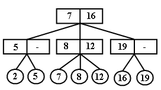
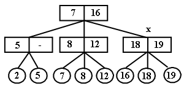
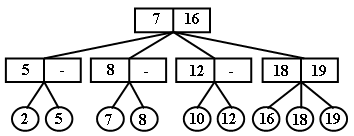
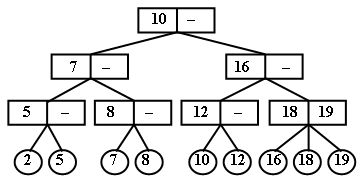
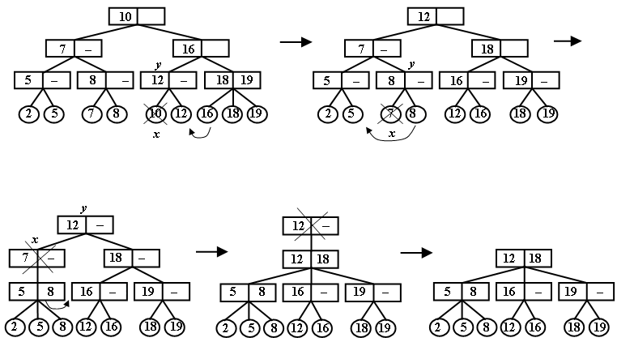

|
|
||||||||
|
|
||||||||
|
Включение элемента в 2 – 3 дерево. Удаление элемента из 2 – 3 дерева
2-3-дерево является идеально сбалансированным деревом поиска. Все пути от корня до любого листа имеют одинаковую длину [1]. Свойства структуры 2-3 дерева:
 2-3 - дерево соответствует полному, идеально сбалансированному BST-дереву, если все его узлы являются 2-узлами. В этом случае его высота равна log2 n. С другой стороны, если все узлы в 2-3 - дереве – 3-узлы, то высота 2-3-дерева равна log3 n. Таким образом, длина прохода от корня дерева к листьям с элементами и, следовательно, трудоёмкость операций лежит в пределах O(log3 n) - O(log2 n). Поиск элемента в 2 – 3 деревеЭлемент можно найти за время O(log2 n), сравнивая ключ искомого элемента с параметрами в узлах. Если ключ меньше, чем минимальный элемент у второго сына, то выбирается первый сын. Иначе, если узел имеет двух сыновей, выбирается второй сын. Если есть третий сын, то выбирается второй сын, если ключ меньше минимального ключа третьего сына, или третий сын в противном случае. Таким образом, поиск приводит к листу с искомым ключом.
Включение элемента в 2 – 3 дерево Включение нового элемента начинается также как и процесс поиска. Пусть мы находимся в некотором внутреннем узле х, чьи сыновья не содержат элемента с заданным ключом k. Если узел содержит двух сыновей, то новый элемент подключается к этому узлу в качестве третьего сына. Новый элемент помещается так, чтобы не нарушить упорядоченность сыновей. После этого корректируются значения минимальных ключей в узле. Например, включаем элемент с ключом 18. При поиске мы приходим к самому правому внутреннему узлу x. Помещаем 18 среди сыновей этого узла в порядке 16, 18, 19. В узле x записываются копии ключей 18 и 19.  Если при подключении к узлу, новый элемент является четвертым, то узел х расщепляется на 2 узла x и x`. Два наименьших элемента переносятся в узел х, а два наибольших – в x`. Теперь надо вставить узел x` среди сыновей родителя х. Здесь ситуация повторяется. Если родитель имеет двух сыновей, то узел x` становится третьим сыном. Если родитель имеет трех сыновей, то он в свою очередь расщепляется на два узла. Процесс восходящего расщепления идет в случае необходимости выше и может достигнуть корня дерева. При необходимости расщепления корня создается новый корень, сыновьями которого становятся два узла, получившиеся при разбиении старого корня. Пусть мы вставляем элемент с ключом 10. Выбранный внутренний узел до подключения имеет трех сыновей, поэтому он разбивается на два узла.  В свою очередь корень теперь имеет 4 сына и также разбивается на два узла. При этом создается новый корень, объединяющий два узла, получившихся после разбиения старого корня. 
Алгоритм вставки элемента в 2-3 - дерево
1
2
3 3 Создание узла листа с ключом k и данными data - lt 4 if дерево пусто 5 then создание внутреннего узла - корня - root 6 son1[root] ← lt 7 return TRUE 8 if корень имеет одного сына 9 then if key[son1] < k 10 then прикрепить узел lt вторым сыном корня root11 return TRUE 12 else if key[son1] > k 13 then прикрепить узел lt первым сыном корня root 14 return TRUE
15
else 16 уничтожить узел - лист lt 17 return FALSE
18
19 inserted ← Insert1(root, lt, tbk, lbk)
20 if
inserted = TRUE
21
then if tbk ≠
nil
22 then создание нового корня root1 23 son1[root1] ← старый корень root 24 son2[root1] ← tbk 25 назначить root1 новым корнем дерева 26 return inserted
T23_Insert1(t, lt, tnew, low)
1
2
3
4 5 tnew ← nil 6 if t - лист 7 then if key[t] = key [lt] 8 then return FALSE 9 else tnew ← t или lt с большим ключом 10 low ← больший из key[t] и key[lt] 11 return TRUE
12 13 выбрать w – сына t узла для вставки lt 14 inserted ← T23_Insert1(w, lt, tbk, lbk) 15 if inserted = TRUE and tbk ≠ nil 16 then вставка tbk среди сыновей узла t, справа от w 17 if t имеет 4 сына 18 then создание нового внутреннего узла tnew 19 перенос двух правых сыновей из t в tnew 20 low ← минимальный ключ первого сына tnew 21 return inserted
Удаление элемента из 2 – 3 дереваЕсли при удалении узла x у родителя - у останется один сын и узел у является корнем, то родитель удаляется из дерева, а корнем становится его единственный сын. Пусть родитель не является корнем. Тогда, если братья узла у имеют трех сыновей, то один из этих сыновей передаются узлу у, и у него становится двое сыновей. Если братья имеют двух сыновей, то единственный сын узла у передается одному из братьев в качестве третьего сына. Узел у после этого удаляется. Если после этого у родителя удаленного узла у останется один сын, то процесс перестройки повторяется для него.

Алгоритм удаления элемента из 2-3 - дерева1 if дерево пусто 2 then return FALSE 3 if корень имеет одного сына 4 then if key[son1[root]] = k 5 then уничтожение первого сына корня 6 уничтожение корня 7 root ← nil 8 return TRUE 9 else return FALSE 10 deleted ← T23_Delete1(root, k, tmin, one) 11 if deleted = TRUE 12 then if one = TRUE
13
14 then if son1[root] не лист 15 then уничтожение корня root 16 назначение son1[root] корнем дерева
17 else if tmin 18 then корректировка границ поиска в корне - low2[root] или low3[root] 19 return deleted
T23_Delete(t, k, tmin, one )
1
2
3
4
5 tmin ← nil 6 one ← FALSE 7 if сыновья узла t – листья 8 then if t имеет сына с ключом k 9 then удаление сына с ключом k 10 tmin ←адрес первого сына узла t 11 if t имеет одного сына 12 then one←TRUE 13 else one← FALSE 14 return TRUE 15 else return FALSE
16
17 выбрать w – сына узла t 18 deleted ← T23_Delete(w, k, tmin_bk, one_bk) = FALSE 19 if deleted = TRUE 20 then 21 tmin ← tmin_bk 22 if tmin_bk ≠ nil и w – второй или третий сын узла t 23 then корректировка low2[t] или low3[t] соответственно 24 tmin ← nil 25 if one_bk = TRUE
26
then
27 if w – первый сын узла t 28 then if y – второй сын узла t имеет 3-х сыновей 29 then 1-й сын y делается 2-м сыном узла w 30 else сын узла w делается 1-м сыном узла y 31 удаление узла w из сыновей узла t 32 if t имеет одного сына 33 then one ← TRUE 34 else one ← FALSE 35 if w – второй сын узла t 36 then if y – первый сын узла t имеет 3-х сыновей 37 then 3-й сын узла y делается 1-м сыном узла w 38 one ← FALSE 39 if z – третий сын узла t имеет 3-х сыновей 40 then 1-й сын узла z делается 2-м сыном узла w 41 one ← FALSE
42
43 сын узла w делается 3-м сыном первого сына узла t-y 44 удаление w из сыновей узла t 45 if t имеет одного сына 46 then one ← TRUE 47 else one ← FALSE
48
49 one ← FALSE 50 if y – второй сын узла t имеет 3-х сыновей 51 then 3-й сын узла y делается 1-м сыном узла w
52
else
53 сын w делается 3-м сыном узла у 54 удаление w из сыновей 55 return deleted
|
||||||||
|
|